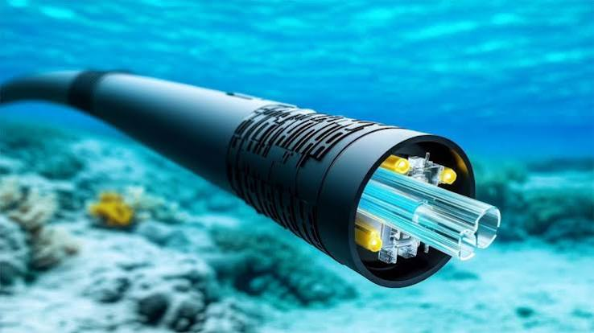
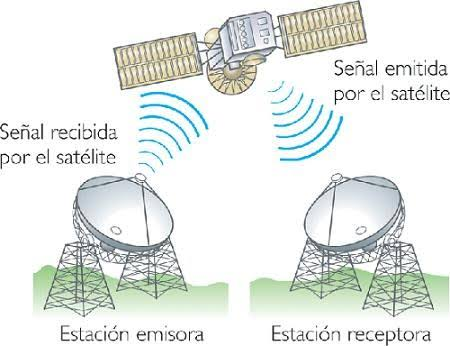
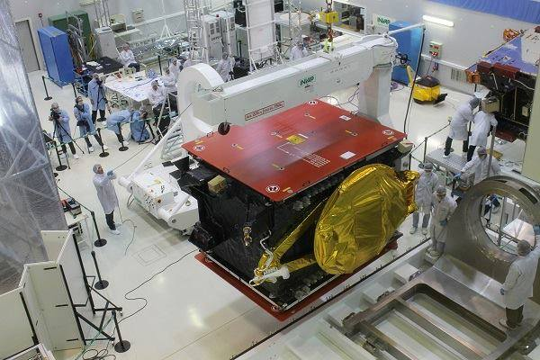
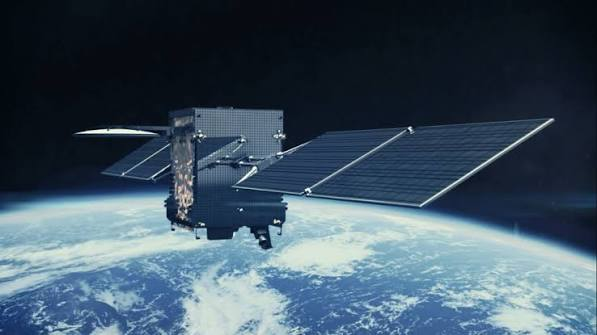
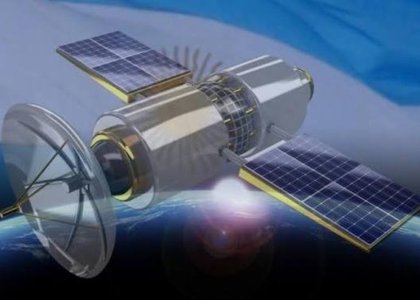

1. Fibra Óptica Submarina - TP 13
Son cables de fibra óptica altamente blindados con capas de acero, cobre (para alimentar repetidores ópticos) y polietileno, depositados sobre el lecho oceánico por buques cableros especializados. Transportan más del 99% del tráfico internacional de Internet.
Conexión en Argentina: La estación de amarre principal del país se ubica en Las Toninas (Provincia de Buenos Aires). Allí llegan cables internacionales clave como SAm-1, Tannat, Malbec y Firmina, conectando a la Argentina con Brasil, Estados Unidos y el resto del mundo.

Estructura blindada de un cable submarino intercontinental
2. Microondas Terrestres y Satélites - TP 14 y 15
Enlaces de Microondas Terrestres
Utilizan antenas parabólicas montadas en torres elevadas y alineadas en línea de vista directa (separadas unos 30 a 50 km debido a la curvatura terrestre). Operan en frecuencias altas (GHz) para troncalizar comunicaciones entre ciudades.
Comunicaciones Satelitales
Funcionan como estaciones repetidoras en el espacio: reciben una señal ascendente (uplink) desde una estación terrena, la amplifican mediante transpondedores y la retransmiten en otra frecuencia hacia la Tierra (downlink), logrando cobertura en zonas rurales, marítimas o montañosas.

Esquema de enlace ascendente y descendente en telecomunicaciones
3. Investigación: Satélites en Argentina - ARSAT
ARSAT (Empresa Argentina de Soluciones Satelitales S.A.) gestiona la infraestructura espacial y la Red Federal de Fibra Óptica (REFEFO). Los satélites fueron fabricados en Bariloche por INVAP, posicionando a la Argentina entre los pocos países capaces de construir satélites geoestacionarios propios.
ARSAT-1
Lanzamiento: Octubre de 2014.
Órbita: Geoestacionaria 72° Oeste.
Opera en banda Ku brindando televisión digital, telefonía y transmisión de datos en todo el territorio argentino (incluyendo la Antártida e Islas Malvinas) y países limítrofes.

Satélite ARSAT-1
ARSAT-2
Lanzamiento: Septiembre de 2015.
Órbita: Geoestacionaria 81° Oeste.
Opera en bandas Ku y C. Amplía la pisada satelital hacia todo el continente americano (desde Canadá hasta Tierra del Fuego) para exportación de servicios audiovisuales.

Satélite ARSAT-2
ARSAT-SG1 (Segunda Generación)
Tecnología: Alto Rendimiento (HTS).
Banda: Banda Ka.
Diseñado para ofrecer Internet satelital de alta velocidad a más de 200.000 hogares, escuelas y centros de salud en zonas rurales de Argentina, Bolivia, Chile y Paraguay.

Proyecto ARSAT-SG1